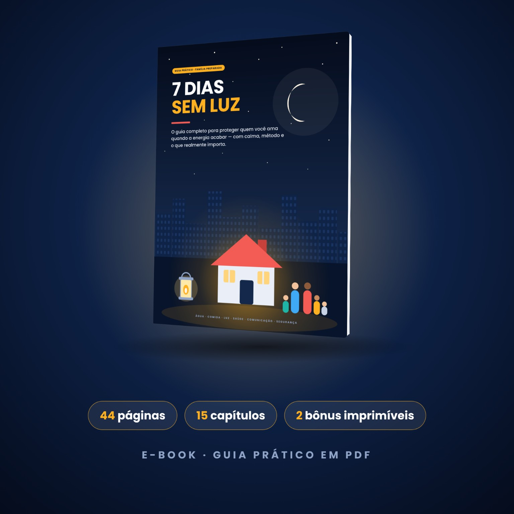

💧
Água e armazenamento
Como planejar a reserva, armazenar e conhecer formas de tornar a água segura.
Um guia prático para organizar água, alimentos, remédios, iluminação e comunicação — e enfrentar imprevistos com mais calma e planejamento.
E-book em PDF · Pagamento único · Acesso digital após a confirmação
Guia educativo de preparação. Não prevê apagões.

A geladeira, o roteador, o portão automático e os carregadores podem deixar de funcionar. Ter um plano ajuda a família a saber por onde começar, sem depender de improviso.
Assista à apresentação do guia.
O conteúdo foi organizado para ajudar você a pensar nos itens essenciais e montar sua preparação aos poucos.
Como planejar a reserva, armazenar e conhecer formas de tornar a água segura.
Organização dos alimentos, ordem de consumo e planejamento de compras.
Iluminação, economia de bateria e cuidados importantes com geradores.
Planejamento de remédios, primeiros socorros e necessidades específicas.
Como combinar formas de contato e evitar a propagação de boatos.
Cuidados com gás, higiene, clima, crianças, idosos e animais de estimação.
Além dos capítulos, o material reúne recursos para ajudar você a adaptar a preparação à realidade da sua casa.
Acesse o guia digital e consulte as orientações no celular ou imprima as páginas que quiser manter à mão.
PDF digital · 44 páginas · 15 capítulos · 2 bônus imprimíveis
QUERO MEU E-BOOKO acesso será liberado após a confirmação do pagamento, conforme as condições do checkout.
Prazo de arrependimento de 7 dias para compras online, conforme a legislação aplicável.
Não. O material não prevê apagões nem anuncia datas. Ele apresenta orientações gerais para se preparar para possíveis interrupções de energia.
O produto é digital, em PDF. O acesso será disponibilizado após a confirmação do pagamento, pelas instruções enviadas no checkout.
Não. O guia inclui um cronograma para organizar a preparação gradualmente, de acordo com as possibilidades da família.
O conteúdo aborda situações domésticas que também podem afetar quem mora em prédios, como portões, elevadores e abastecimento de água.
Não. É um material educativo e geral. Necessidades específicas de saúde e segurança devem ser orientadas por profissionais e órgãos competentes.